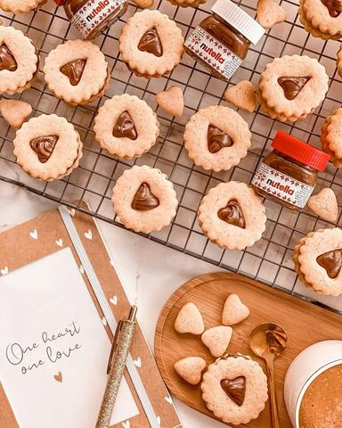

Samo naizgled, suvi , a zapravo od suvog ni S

Moja beleška
SačuvanoZnate li da ovi kolačići oooopasno prete da postanu moji omiljeni..? 🥰 Samo naizgled, suvi , a zapravo od suvog ni S 😅 Badem i mrvica cimeta u testu im daju toooliko neodoljiv šmek, nutella izmedju dva tanka keksica potpuno obogati celu priču i neeema šanse da se zaustavite na jednom 😅🙈 A kad deca osmisle kako su idealni za druženje ispod šatora onda se mama ubrza da napravi i ne razmišljajući o tome kako sad oprati fleke od nutelle sa platna? 🙈😅 Čik probajte kad preostane kolačića i sutradan da pojedete jedan uz kafu, ko je uspeo nek se javi ☺️☺️☺️
Sastojci
- Recept
Priprema
Potrebno je da u blenderu (ja sam koristila nutribulet) sameljete bademe zajedno sa kristal šećerom, pa u to dodajte brašno promešano sa cimetom, soli i pzp-om, a onda to sjedinite. Puter, sobne temperature mikserom penasto umutite, pa mu dodajte ekstrakt vanile, jaje i žumance. Opet lepo umutite, dodajte suve sastojke i testo podelite na dva dela. Inače je jako mekano i puterasto u ovoj fazi da vas to ne buni. Oba dela testa umotajte u providnu foliju pa ostavite u frižideru minimum sat vremena, a možete i nešto duže dok se lepo ne stegne. Na podlozi uz dodatak brašna po potrebi, razvucite tanko testo oklagijom i vadite oblike. Obavezno neka vam podloga bude pobrašnjena, kao i oklagija. Na pek papir rasporedite oblike i pecite tačno 8 minuta na 180C u prethodno zagrejanoj rerni. Prohladjene kremkate, spajate i po želji posipate šećer u prahu.
Originalni opis sa Instagrama
Znate li da ovi kolačići oooopasno prete da postanu moji omiljeni..? 🥰 Samo naizgled, suvi , a zapravo od suvog ni S 😅 Badem i mrvica cimeta u testu im daju toooliko neodoljiv šmek, nutella izmedju dva tanka keksica potpuno obogati celu priču i neeema šanse da se zaustavite na jednom 😅🙈 A kad deca osmisle kako su idealni za druženje ispod šatora onda se mama ubrza da napravi i ne razmišljajući o tome kako sad oprati fleke od nutelle sa platna? 🙈😅 Čik probajte kad preostane kolačića i sutradan da pojedete jedan uz kafu, ko je uspeo nek se javi ☺️☺️☺️ Recept: •100 gr blanširanih badema (ili listića badema) •110 gr kristal šećera •350 gr belog, mekog brašna tip 400 •1/2 kašičice praška za pecivo •1/2 kašičice soli •1 kašičica cimeta •225 gr omeksalog putera •2 kašičice ekstrakta vanile •1 veće jaje i još jedno žumance •po ukusu i želji džem, nutella kao i šećer u prahu Potrebno je da u blenderu (ja sam koristila nutribulet) sameljete bademe zajedno sa kristal šećerom, pa u to dodajte brašno promešano sa cimetom, soli i pzp-om, a onda to sjedinite. Puter, sobne temperature mikserom penasto umutite, pa mu dodajte ekstrakt vanile, jaje i žumance. Opet lepo umutite, dodajte suve sastojke i testo podelite na dva dela. Inače je jako mekano i puterasto u ovoj fazi da vas to ne buni. Oba dela testa umotajte u providnu foliju pa ostavite u frižideru minimum sat vremena, a možete i nešto duže dok se lepo ne stegne. Na podlozi uz dodatak brašna po potrebi, razvucite tanko testo oklagijom i vadite oblike. Obavezno neka vam podloga bude pobrašnjena, kao i oklagija. Na pek papir rasporedite oblike i pecite tačno 8 minuta na 180C u prethodno zagrejanoj rerni. Prohladjene kremkate, spajate i po želji posipate šećer u prahu. • • • #linceri #puterkolačići #mirišenadom #domacikolacici #nutella #idejezadezert #dezert #slatkikolačići #slatkiši #cookies #danzaljubljenih #idejezadanzaljubljenih #zadovoljnahr #uspjesnazena #nutellafilled #homemadecookies #oneheartonelove